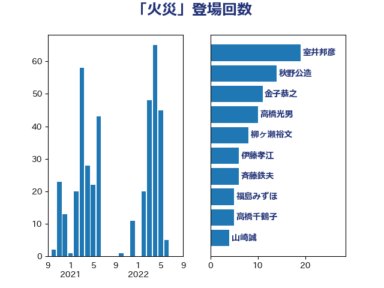

単語「火災」

| 室井邦彦 | 日本維新の会 | 19 回 |
| 秋野公造 | 公明党 | 14 回 |
| 金子恭之 | 自由民主党 | 11 回 |
| 高橋光男 | 公明党 | 10 回 |
| 柳ヶ瀬裕文 | 日本維新の会 | 8 回 |
| 伊藤孝江 | 公明党 | 6 回 |
| 斉藤鉄夫 | 公明党 | 6 回 |
| 福島みずほ | 社会民主党 | 5 回 |
| 高橋千鶴子 | 日本共産党 | 5 回 |
| 山崎誠 | 立憲民主党 | 4 回 |
| 平木大作 | 公明党 | 4 回 |
| 後藤茂之 | 自由民主党 | 4 回 |
| 柿沢未途 | 無所属 | 4 回 |
| 梶山弘志 | 自由民主党 | 4 回 |
| 田村貴昭 | 日本共産党 | 4 回 |
| 赤嶺政賢 | 日本共産党 | 4 回 |
| 下条みつ | 立憲民主党 | 3 回 |
| 住吉寛紀 | 日本維新の会 | 3 回 |
| 大塚耕平 | 国民民主党 | 3 回 |
| 岩谷良平 | 日本維新の会 | 3 回 |
| 岸信夫 | 自由民主党 | 3 回 |
| 打越さく良 | 立憲民主党 | 3 回 |
| 末松義規 | 立憲民主党 | 3 回 |
| 林芳正 | 自由民主党 | 3 回 |
| 森本真治 | 立憲民主党 | 3 回 |
| 橋本岳 | 自由民主党 | 3 回 |
| 武田良太 | 自由民主党 | 3 回 |
| 串田誠一 | 日本維新の会 | 2 回 |
| 井上信治 | 自由民主党 | 2 回 |
| 伊藤岳 | 日本共産党 | 2 回 |
| 城井崇 | 立憲民主党 | 2 回 |
| 宮本徹 | 日本共産党 | 2 回 |
| 小沼巧 | 立憲民主党 | 2 回 |
| 尾崎正直 | 自由民主党 | 2 回 |
| 山添拓 | 日本共産党 | 2 回 |
| 岩渕友 | 日本共産党 | 2 回 |
| 岸真紀子 | 立憲民主党 | 2 回 |
| 平山佐知子 | 無所属 | 2 回 |
| 徳永エリ | 立憲民主党 | 2 回 |
| 松島みどり | 自由民主党 | 2 回 |
| 柳本顕 | 自由民主党 | 2 回 |
| 森山浩行 | 立憲民主党 | 2 回 |
| 浜口誠 | 国民民主党 | 2 回 |
| 田村まみ | 国民民主党 | 2 回 |
| 矢倉克夫 | 公明党 | 2 回 |
| 福山哲郎 | 立憲民主党 | 2 回 |
| 若宮健嗣 | 自由民主党 | 2 回 |
| 下野六太 | 公明党 | 1 回 |
| 伊波洋一 | 無所属 | 1 回 |
| 倉林明子 | 日本共産党 | 1 回 |
| 古川元久 | 国民民主党 | 1 回 |
| 古川康 | 自由民主党 | 1 回 |
| 古賀之士 | 立憲民主党 | 1 回 |
| 坂本哲志 | 自由民主党 | 1 回 |
| 安江伸夫 | 公明党 | 1 回 |
| 宮口治子 | 立憲民主党 | 1 回 |
| 宮本周司 | 自由民主党 | 1 回 |
| 宮路拓馬 | 自由民主党 | 1 回 |
| 小宮山泰子 | 立憲民主党 | 1 回 |
| 小林鷹之 | 自由民主党 | 1 回 |
| 小沢雅仁 | 立憲民主党 | 1 回 |
| 山下芳生 | 日本共産党 | 1 回 |
| 山口壯 | 自由民主党 | 1 回 |
| 山本剛正 | 日本維新の会 | 1 回 |
| 新垣邦男 | 立憲民主党 | 1 回 |
| 朝日健太郎 | 自由民主党 | 1 回 |
| 木村英子 | れいわ新選組 | 1 回 |
| 松野博一 | 自由民主党 | 1 回 |
| 横沢高徳 | 立憲民主党 | 1 回 |
| 橘慶一郎 | 自由民主党 | 1 回 |
| 池田佳隆 | 自由民主党 | 1 回 |
| 深澤陽一 | 自由民主党 | 1 回 |
| 滝波宏文 | 自由民主党 | 1 回 |
| 片山さつき | 自由民主党 | 1 回 |
| 片山大介 | 日本維新の会 | 1 回 |
| 田名部匡代 | 立憲民主党 | 1 回 |
| 田村憲久 | 自由民主党 | 1 回 |
| 石原宏高 | 自由民主党 | 1 回 |
| 石垣のりこ | 立憲民主党 | 1 回 |
| 石川香織 | 立憲民主党 | 1 回 |
| 礒崎哲史 | 国民民主党 | 1 回 |
| 神津たけし | 立憲民主党 | 1 回 |
| 福島伸享 | 無所属 | 1 回 |
| 穀田恵二 | 日本共産党 | 1 回 |
| 笹川博義 | 自由民主党 | 1 回 |
| 若松謙維 | 公明党 | 1 回 |
| 萩生田光一 | 自由民主党 | 1 回 |
| 蓮舫 | 立憲民主党 | 1 回 |
| 西村康稔 | 自由民主党 | 1 回 |
| 西村智奈美 | 立憲民主党 | 1 回 |
| 赤澤亮正 | 自由民主党 | 1 回 |
| 赤羽一嘉 | 公明党 | 1 回 |
| 野田佳彦 | 立憲民主党 | 1 回 |
| 鈴木俊一 | 自由民主党 | 1 回 |
| 鈴木敦 | 国民民主党 | 1 回 |
| 関芳弘 | 自由民主党 | 1 回 |
| 阿部弘樹 | 日本維新の会 | 1 回 |
| 青山大人 | 立憲民主党 | 1 回 |
| 馬場雄基 | 立憲民主党 | 1 回 |
| 高木かおり | 日本維新の会 | 1 回 |
| 高橋英明 | 日本維新の会 | 1 回 |